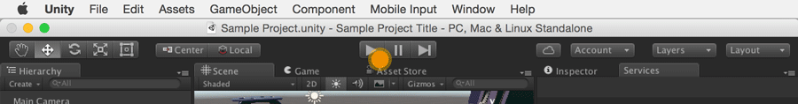

Custom events can be any specific in-game action your user performs. They allow you to track player behavior Unity Analytics does not track automatically, such as level achievement, scene change, entering a store, or interacting with game objects. Each custom event can have its own parameters. Setting parameters on your event allows you to filter data collected at the time the event occurred. Visualization tools for Custom Events can be viewed in the Analytics Dashboard, including Data Explorer, Funnel Analyzer, and Segment Builder.
// Reference the Unity Analytics namespace
using UnityEngine.Analytics;
// Use this call for wherever a player triggers a custom event
Analytics.CustomEvent(string customEventName,
IDictionary<string, object> eventData);
| Analytics.CustomEvent Input Parameters | ||
|---|---|---|
| Name | Type | Description |
| customEventName | string | Name of custom event. Name cannot include the prefix “unity.” — This is a reserved keyword. |
| eventData | dictionary | Additional parameters sent to Unity Analytics at the time the custom event was triggered. eventData key cannot include the prefix “unity.” — This is a reserved keyword. |
A few considerations with regards to the custom events:
In the example below we are interested in knowing what our user had in their inventory at the time the game ended.
// Reference the Collections Generic namespace
using System.Collections.Generic;
int totalPotions = 5;
int totalCoins = 100;
string weaponID = "Weapon_102";
Analytics.CustomEvent("gameOver", new Dictionary<string, object>
{
{ "potions", totalPotions },
{ "coins", totalCoins },
{ "activeWeapon", weaponID }
});
To send test Custom Event data to our servers and validate your integration, trigger your Custom Event during Editor Play mode. 
If integration is successful, your test data will display in the table below.